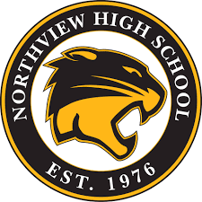

What is Student Council?
Sylvania Northview Student Council (STUCO) is one of the largest and most influential organizations at our school. With over 150 students involved, this group not only helps shape and influence school policy, but we also raise money for area charities, stage assemblies, put on school dances and generally try to make Northview a school that you are proud to attend. Student Council consists 8 student council officers elected at summer retreat, student council representatives (any grade just sign up, no election needed), and freshman, sophomore, junior & senior class officers. Main responsibilities include assembly planning, powder puff football, spirit week, wacky wildcat lunch games, and turnabout.
